, by clicking you have a dialog box with all the last messages.
, by clicking you have a dialog box with all the last messages.
(*) A document type is choosen when opening a document or creating a new one.
EditiX displays information and error messages in the status bar on the right.
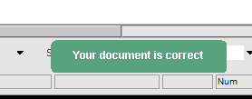
The message is displayed while 4 seconds, may be this is not enough for you and you may change this behavior by showing a dialog window using the preference application/interface/externalMessage. For any errors, the following icon is displayed inside the status bar , by clicking you have a dialog box with all the last messages.
The output console is available at all times using the following button. . By clicking on the same button you can close this console. This console is useful for JavaScript output messages.
Each document has a document type that has to be choosen when opening a file according to the selected filter from the file dialog box.

You may update this document type using the File Info panel (from the "File" menu).

When
opening a document from the "Open recent" menu item or by opening a
project from the "Open project" menu item, the document type is
always restored. User may also change the default file encoding. User
cannot define a new document type but it is always possible to assign
another document type for a template document from the
"Template" menu and the "Edit templates" item.
Here a list of available document types :
| Document
Type |
Role |
Icon |
|---|---|---|
| XML | Standard XML document |
|
| DTD | Document Type
declaration document |
 |
| TEXT | Simple text document
without XML content |
|
| XSLT | XSL Transformations document |  |
| XSLT2 | XSL Transformations 2.0 document | |
| XSLT3 | XSL Transformations 3.0 document | |
| XQR | XQuery document | |
| XHTML | XHTML document |
|
| HTML | HTML document (4.0 or 5.0) | |
| JS | JavaScript document | |
| JSX | JavaScript document with the DOM API support | |
| FO | XSL-FO document |
|
| RNG | XML RelaxNG document |
|
| XSD | W3C XML Schema
document |
|
| SVG | Scalable Vector
Graphics document |
|
| DOCBOOK | DocBook document |
|
| EXML | Very large XML document. EditiX will use minimal functions for saving the memory. You will not have a tree for sample. | |
| EXF | XML Form Designer | |
| XXF | XML Form Editor | |
| ANT | Ant project document |
 |
| XFL | XML Scenario | |
Note : Blue color is usually for user XML documents, Green color is for transformation documents (like XSLT), Red color is for validation (like DTD), Yellow color is for visual documents (like SVG).
The document's icon is shown in the tab list of opened documents and when opening a recent document from the "File" menu.

| Menu item |
Role |
Shortkey* |
Document type |
|---|---|---|---|
| New Project... | Create a project from a physical directory. | All | |
| New Project from an archive | Create a new project using an archive content (ZIP...) | All | |
| Open recent project... | Get a project from a previous choice | All | |
| Open project... | Open a project by selecing a system directory. Projects are notivied by a specific icon. | All | |
| Close Project | Close the current project and save all the parameters | ||
| New Document... | Create a new document from the
available templates |
N |
All |
| Open Document... | Open a document from the file
system |
O |
All |
| Open recent... | Shows documents that were most
recently loaded, in order to select one to open. |
All |
|
| Open by HTTP | Open any documents by HTTP GET or POST methods. You can set and save your HTTP parameters. | All | |
| Insert file... | Insert a document at the caret
location |
All |
|
| Pin files | This is the way to open your pinned files | All | |
| Pin/Unpin file | Pin or unpin the current file | All | |
| Close | Close the current document. A
dialog box will be prompted if the document must be saved before closing. |
Alt F4 |
All |
| Close all | Close all the opened document. A
dialog box will ask to save changed documents that are not saved. |
All |
|
| Close and Delete | Close the current document and
delete it. User can't read it again. A dialog will ask to confirm
deleting. |
All |
|
| Import/HTML |
Convert an HTML document to XHTML |
All |
|
| Import/Spreadsheet |
Import CSV or Excel document, a dialog box will appear for selecting the right data |
All |
|
| Import/JSON | Import a JSON (.json or .jso) file format to XML | All | |
| Import/SQL | Convert an SQL query to XML using JDBC Driver (by default with ODBC) | All | |
| Export/Java classes | Create Java classes from the XML document. It will generate too a SAX handler for using objects rather than DOM nodes with this document. | All | |
| Export/JSON | Export your XML document to the JSON format | All | |
| XML Databases | Open a panel for managing XML databases content | All | |
| Style library... | Panel for storing/restoring CSS style in any documents | All | |
| Save | Save the current document for
the file system, ftp, zip, xml databases. The user doesn't have to worry
about the way the file has been loaded. |
S |
All |
| Save as... | Save the current document to the local
file system. |
All |
|
| Save as template... | Store the current document as a
template for the "New..." item usage. User can delete it from the
"Template" menu. |
All |
|
| Save all | Save all the opened documents |
All |
|
| Browse files | Show or hide the file browser. This is a facility for editing quickly a document from the file system. | alt 1 | All |
| Browse files by FTP... | Browse an FTP server for editing
a file. User will have to specify the host, user name and password. If
a proxy is needed, it is required to update the "proxy" preference. Use
the "Save" item for saving. |
All |
|
| Browse files by ZIP... | Browse a zip or jar file for
editing a file. Use the "Save" item for saving. |
||
| File info | Panel with the current file encoding and document type. User can also change these values. | alt 3 | All |
| Encoding | Select a file encoding (like UTF-8 e.g.) for reading or writing a file. In case of uncertainty about encoding the "AUTOMATIC" value is recommended. This value is also available inside the preferences through the "file" category or when opening a new document. In the AUTOMATIC mode the encoding will be read from the XML prolog (encoding property), if missing it will use UTF-8. | All | |
| Print... | Print the current document |
P |
All |
| Quit | Exit from editiX. (Quit EditiX) |
All |
* By default with ctrl or command (under Mac OS X)
- File/Template submenu
| Document type | Role | Shortkey* | Document type |
|---|---|---|---|
| Edit templates... | This is a dialog box for
updating the templates parameters like the assigned extensions or the
icon... |
All |
|
| Generate a minimal template... | It will analysis the current
document and produce a minimal document that can be used as a template
for the next usage. |
All | |
| Insert template param | It will insert a template
parameter (current date, version, author, encoding...) used when
creating a new document from the template |
All |
| Menu item | Role | Shortkey* | Document type |
|---|---|---|---|
| Undo | Undo the last action. This is
unauthorized if you format the document. |
Z |
All |
| Redo | Redo the last action. |
Y |
All |
| Cut | Cut the selection. |
X |
All |
| Paste | Paste the clipboard |
V |
All |
| From the current node/Cut | Cut the current node | shift X | All |
| From the current node/Copy | Copy the current node. Use the Paste action after. | shift C | All |
| From the current node/Duplicate the previous sibling | Copy the previous node sharing a same parent node from the current node. | shift P | All |
| From the current node/Duplicate the following sibling | Copy the next node sharing a same parent node from the current node. | shift F | All |
| From the current node/trim the text | Trim the tag's text, removing whitespaces before and after | All | |
| From the current node/Add a bookmark | Store the current node inside the bookmark. Look at the search menu for usage. | B | All |
| From the current node/select | Select the current node (element or text). | shift A | All |
| Copy XPath location | Copy to the clibboard the current xpath location
at the caret. |
XML;XHTML;DOCBOOK;XXF |
|
| Copy File location | Copy to the clipboard the current file location. Path separator will be '/'. | All | |
| Select all | Select the whole document |
A |
All |
| Surround by a Tag... | Surround the selection by a tag. Note you can split your selection for repeating the surrounding for each line for sample.
|
shift T |
XML;XSLT;XHTML;XSD;RNG;FO;DOCBOOK;XXF |
| Repeat the last surrouding | Use your last surrounding parameters and apply it to the current selection. | alt R | XML;XSLT;XHTML;XSD;RNG;FO;DOCBOOK;XXF |
| Comment or Uncomment | Comment/Uncomment the current text selection. If there's no selection, the current node will be commented. |
M |
DTD;XML;XSLT;XHTML;XSD;RNG;FO;DOCBOOK;XXF |
| Surround by a CDATA Section | Surround the selection by an XML
CDATA section. |
XML;XSLT;XHTML;XSD;RNG;FO;DOCBOOK;XXF |
* By default with ctrl or command (under Mac OS X)
- Search menu
| Menu item | Role | Shortkey* | Document type |
|---|---|---|---|
| Find/Replace... | Search/Replace a character string in the
whole
document. |
F |
All |
| Search again |
Repeat the last search |
F3 |
All |
| File Search... | Open a panel for searching an expression in project or a directory using text, xpath or regexp. | All | |
| Bookmarks/Go to | This is sub menu with all stored bookmarks. The sub menu content can be stored using a project. | All | |
| Bookmarks/Add a bookmark | Add the current node inside the bookmark or the cursor location (for DTD as sample) | B | All |
| Bookmarks/Remove all bookmarks | Remove all the stored bookmarks | All | |
| Search in a tree clone... | Show a dialog box with a tree
clone to navigate in the whole document. |
XML;XSLT;XHTML;XSD;RNG;FO;DOCBOOK;XXF |
|
| Node search |
Search a part of the document
with XML criterias like an element name, an attribute name or value or
a namespace... |
XML;XSLT;XHTML;XSD;RNG;FO;DOCBOOK;XXF |
|
| Display the current element occurences | Display in a left panel all the occurences of the current element. | F2 | All |
| Show next node | Move the caret from the current location o the next tag. | shift U |
XML;XSLT;XHTML;XSD;RNG;FO;DOCBOOK;XXF |
| Show previous node | Move the caret from the current
location to the previous
tag. |
shift I |
XML;XSLT;XHTML;XSD;RNG;FO;DOCBOOK;XXF |
| Show the begin of the element node | Show without moving the caret
the beginning of the tag. |
shift L |
XML;XSLT;XHTML;XSD;RNG;FO;DOCBOOK;XXF |
| Show the end of the element node | Show the end of the tag without
moving the caret. |
shift P |
XML;XSLT;XHTML;XSD;RNG;FO;DOCBOOK;XXF |
| Go to/line... | Choose a line number where to
move the
caret. |
G |
All |
| Go to/offset... | Choose an offset from the beginning of the document | All |
| Menu item | Role | Shortkey* | Document type |
|---|---|---|---|
| Check this document | If a schema/DTD is available then
parse
and check the validity of the document. If no schema/DTD is available only
check if the document is well-formed. |
K |
XML;XSLT;XHTML;XSD;RNG;FO;DOCBOOK;XXF |
| Check all the documents | Check all the opened document including XML/DTD/CSS/XQuery. This action can only work from a current XML document. | shift K | XML;XSLT;XHTML;XSD;RNG;FO;DOCBOOK;XXF |
| Check with schematron | Load an external schematron file and apply rules for the current XML document. Note that you can assign schematron file with a processing instruction from the DTD/Schema menu. | XML;XSLT;XHTML;XSD;RNG;FO;DOCBOOK;XXF | |
| Format/Pretty format (default) | If the document is well-formedness then format the content with some tab characters. The number of tab caracters can be changed using the Options/Preferences menu. |
R |
XML;XSLT;XHTML;XSD;RNG;FO;DOCBOOK;XXF |
| Format/Pretty format (explicit open/close elements) | This is similar to the previous menu, excep there's no empty element like that <tag/> but only <tag></tag>. | XML;XSLT;XHTML;XSD;RNG;FO;DOCBOOK;XXF | |
| Format/Unformat | This is a way to create a very short document for optimizing parsing time. This is not user friendly, only for machine. | XML;XSLT;XHTML;XSD;RNG;FO;DOCBOOK;XXF | |
| Format/Tabulation width | This is a sub menu listing possible size for the tabulation caracter. When formatting a tabulation caracter is used for each level, the visible width of this tabulation can be changed here. Note that it requires to reload EditiX. | All | |
| Format/Indent size | It will set how many tabulations you can have when formatting an XML document for separating each element level. | All | |
| Comment... | Insert or edit an XML comment. |
XML;XSLT;XHTML;XSD;RNG;FO;DOCBOOK;XXF |
|
| Namespace manager... | A dialog box for inserting/removing a namespace easily. It will manage prefix or default namespace. | All | |
| Update | Udate your current XML document using XSLT 1/2/3 or a JavaScript file with the DOM API | XML | |
| Use a temporary schema for completion | Generate an inner schema for
having a content assitant without available schema. |
XML;XXF |
|
| Disabled / Enabled syntax popup | Enabled/Disable the content
assistant. |
All |
|
| XPath view... | Builder for general XPath
expressions. When editing an XSLT document, it applies only to the XML
data document. A popup is available inside the history for copying/saving the XPath expressions. |
XML;XSLT;XXF |
|
| XQuery builder... |
Builder for XQuery expression.
Useful mainly for XSLT 2.0. |
XML;XSLT;XXF |
|
| XML Diff... | Open an external dialog for compating both XML documents. | All | |
| Hexadecimal editor... | Open an external editor for hexadecimal usage, useful for detecting/changing wrong BOM or caracters. | All | |
| Character Reference view... |
Put an UTF 16 character reference like

 using a dialog box for choosing the decimal or hexadecimal
value |
All |
|
| XML Snippets View | This is a panel for storing and reusing easily XML structure like an HTML table. | XML;XSLT;XHTML;XSD;RNG;FO;DOCBOOK;XXF | |
| Lock/Unlock Tag update | Avoid the user to corrupt a tag.
So when locking use can only update the text part. This action will be saved inside the current project. |
XML;XSLT;XHTML;XSD;RNG;FO;XXF |
|
| Auto close | Choose the mode for closing your tag depending on the content with several lines (block) or single line (inline) | ALL | |
| XInclude/Include XML file | Insert inside the XML editor an XInclude tag related to an external XML file | XML | |
| XInclude/Include XML file with XPointer | Insert inside the XML editor an XInclude tag related to an external XML file and XPointer location | XML | |
| XInclude/Include Text file | Insert inside the XML editor an XInclude tag related to an external Text file | XML | |
| XInclude/Extract the current node | Replace the current node by an XInclude tag building a new XML sub file | XML | |
| XInclude/Remove the XInclude node | Replace the XInclude tag by the related file | XML | |
| XML Catalog... |
Use a set of OASIS XML Catalogs
for working with custom DTD or Schema location |
ALL |
| Menu item | Role | Shortkey* | Document type |
|---|---|---|---|
| Assign DTD to document... | Insert a DTD declaration inside
the current XML document. |
XML;XXF |
|
| Assign W3C XML Schema to document... | Insert a W3C XML Schema
declaration inside the current XML document. Note that the user will
have to move the inserted part if the initial document was not empty. |
XML;XXF |
|
| Assign XML Relax NG Schema to
document... |
It will bind your document to a
Relax NG schema. Thus the code assistant and the "Check or Validate"
action will work with it. Note that using a project you can save this
relation. |
XML;XXF |
|
| Assign schematron to document... | Insert a schematron processing instruction from a file selection. This instruction will be used automatically when checking your document. | XML;XXF | |
| Generate DTD from this document | Generate a new DTD from the
current XML document. Thus the user will be able to validate its
document. |
XML;XXF |
|
| Generate W3C Schema from this document | Generate a new W3C XML Schema
from the current XML document. Thus the user will be able to validate
its
document. |
XML;XXF |
|
| Generate XML RelaxNG from this document | Generate a new RelaxNG Grammar from the current XML document. Thus the user will be avalable to validate it. | XML;XXF | |
| Generate a documentation from this DTD | Generate an HTML documentation with the DTD content | DTD | |
| Generate a documentation from this Schema | Generate an HTML document with the W3C Schema content. | XSD | |
| Convert DTD to W3C XML Schema | Convert the current DTD to a W3C
XM Schema. |
DTD |
|
| Convert DTD to XML RelaxNG | Convert the current DTD to a XML
RelaxNG Schema. |
DTD |
|
| Convert XML RelaxNG to W3C XML Schema | Convert the current XML RelaxNG
schema to a W3C XML Schema. |
RNG |
|
| Convert XML RelaxNG to DTD | Convert the current XML RelaxNG
schema to a DTD. |
RNG |
|
| Check this DTD | Scan the current DTD and check for invalid declaration or usage. | DTD | |
| Generate an XML Template from this Element | Go to an element definition from your grammar, a new XML document will be generated from it. |
XSD;DTD;RNG |
| Menu item | Role | Shortkey* | Document type |
|---|---|---|---|
| Assign XSLT to this document... | Insert an XML processing
instruction for binding an XSLT document to the current one. Thus some
browsers like IE will transform the document
automatically. |
XML;DOCBOOK;XXF |
|
| Assign CSS to this document... | Insert an XML processing instruction for binding a CSS document to the current one. Thus some browsers like IE will transform the document automatically. | XML;DOCBOOK;XXF |
|
| Map a W3C Schema | Assign a schema to the current XSLT document for the content assistant. It helps for creating the output document. | XSLT | |
| Transform using an XQuery request... | Transform the current XML document using a XQuery request. | XML;XXF | |
| Transform a document with this XQuery request... | Transform an XML document using the current XQuery request. | XML;XXF | |
| Transform using XSLT... | It will display a dialog box
with the XSLT parameters like the data source, the XSLT document and
the final result document. Once the parameters fixed, the
transformation will operate. |
XML;DOCBOOK;XXF |
|
| Transform a document with this XSLT... | This is very similar to the previous one except the XSLT document will be the current one. Once the parameters fixed, the transformation will operate. | XSLT |
|
| Start XSLT debug | Start the XSL transformation in
a debug mode for analysis the way the processing is completed. This
action requires to have at least one breakpoint. |
XSLT |
|
| Run until the next breakpoint | Run in a debug mode to the next
breakpoint. |
shift B |
XSLT |
| Run step by step | Run in a debug mode until the
next tag. |
shift E |
XSLT |
| Terminate XSLT debug | Conclude the XSL Transformation
in a debug mode. It will show the final result. |
XSLT |
|
| List of breakpoints | Display a dialog box with the
user's breakpoints |
XSLT |
|
| Profile this XSLT... | Check your XSLT iteration timing | XSLT | |
| Archive your transformation | Store and reuse any XSL transformations. It includes XQuery too. | All | |
| Create a scenario... | Generate a scenario file for running the transformation in a batch mode for a set of XML source | XSLT | |
| Repeat last transformation | Redo the last XSL transformation. |
J | XML;DOCBOOK;XSLT;XXF |
| Menu item | Role | Shortkey* | Document type |
|---|---|---|---|
| FO Transformation... | Display a dialog box for
choosing the parameters of the FO Transformation like the final
document type (PDF...). |
FO |
|
| Repeat last transformation | Repeat the last transformation
with the parameters from the previous item. |
FO |
|
| New Link... | Insert basic external and inner links. Inner lnks require at least one id attribute like on the block element. | FO | |
| New List... | Insert a hierarchy of items | FO | |
| New Table | Insert a fixed table with a set of rows and columns. | FO | |
| Edit FOP Configuration | It will create an fop.xml configuration file inside your .editix directory, this is useful for sample for adding a new police... | FO |
| Menu item | Role | Shortkey* | Document type |
|---|---|---|---|
| DocBook Transformation... | Display a dialog box for
choosing the parameters of the DocBook Transformation like the final
document type (PDF...). |
DOCBOOK |
|
| Repeat last transformation | Repeat the last transformation
with the parameters from the previous item. |
ctrl shift J |
DOCBOOK |
* By default with ctrl or command (under Mac OS X)
- HTML
| Menu item | Role | Shortkey* | Document type |
|---|---|---|---|
| New Link... | Insert a set of external or inner links. |
HTML;XHTML |
|
| New List... | Insert a hierarchy of items. | ||
| New Table... | Insert a table with a set of rows and columns. Headers can be set too. | HTML;XHTML | |
| Convert to XHTML | Convert an HTML document to a XHTML one. | HTML | |
| Browser preview | Display your HTML document using the default navigator. | HTML;XHTML |
- JSON
| Menu item | Role | Shortkey* | Document type |
|---|---|---|---|
| Assign a JSON Schema... | Link a JSON Schema to your JSON document, it will be used when checking the document. You need a project for a next usage. |
JSON |
|
| Check | Check your JSON document, it may use too a JSON Schema. | JSON | |
| Format | Format your JSON document. | JSON | |
| New member... | Add a new member to the current object, note it will format the full document | JSON | |
| Insert | A submenu for inserting at the caret location a set of JSON object like array... | JSON | |
| Delete the member | Delete the member at the caret location. Note it will format the full document. | JSON |
| Document type | Role | Shortkey* | Document type |
|---|---|---|---|
| Split/Unsplit Vertically | Split or unsplit the current
document vertically. Thus the user can modify one view and look at
another
one. |
All | |
| Split/Unsplit Horizontally | Split or unsplit the current
document horizontally. Thus the user can modify one view and look at
another one. |
All | |
| Hide/Show tree | Hide or show the document tree.
Hide will maximize the user editing space. |
All | |
| Select... | Display a dialog box for
selecting a document from its file path. |
All | |
| Previous Selected File | Select or Open the previous document | Alt - Left | All |
| Next Selected File | Roll back to the last document (when selecting the previous action) | Alt - Right | All |
| Windows | Sub menu with all the windows (shown in the left panel side). | All |
|
| Extract the current editor | Will open the current editor in a new individual window. This is useful when requiring to compare multiple documents. It can be used too on the editor tabs with a popup menu. | All | |
| Extracted editors | Show the extracted editors due to the previous action. This the selected window will be put in the frontground. | All | |
| System preview | It will call the current system viewer for this document. For example with an XHTML document it may call your navigator like IE or FireFox depending on your operating system. |
All | |
| Browser preview | Try to call your default browser with the current document. | All | |
| SVG preview | Display a dialog box with an SVG
preview. Take a little delay into account before the first content
display. |
All | |
| Whitespace display | Display or not each whitespace from the current document. | All |
- Options menu
| Menu item | Role | Shortkey* | Document type |
|---|---|---|---|
| Preferences... | Display a dialog box with the
user's preferences. Such preference will modify the way EditiX is
working. Note that it is required to restart editix after changing a
value. |
All |
|
| EditiX Descriptor | Display the application descriptor, you can update menus, toolbars and add your own actions | All | |
| External Tools... | Show a dialog box for running an
external command. This command can contain some macros like the current
document path... |
All |
|
| Check the last version... | It will ask to the EditiX site
the last available version. |
All |
|
| Install a custom parser... |
Install and use a java JAXP
compatible XML parser |
All |
|
| Install a custom transformer... |
Install and use a java JAXP
compatible XSLT transformer |
All |
|
| Install a custom xmldb driver... | Install an xmldb compatible driver for XML database. Usage is for the XML databases panel. | All | |
| Scripts/Manage scripts | Add a new script inside the Script Manager. After installation, you can run it from the "Run a script" item or by a shortkey. | All | |
| Scripts/Test Script | Try to run your current script. | JS | |
| Scripts/Install new Scripts | This is a dedicated page for installing new scripts inside editix. | All | |
| Scripts/Run a script | A submenu containg all the script defined the Script Manager dialog. This is always disponible when running editix. You can run it direcly or using a shortkey. | ||
| Schema CSS document | Update the default CSS document for generating a W3C Schema documentation. | ||
| Edit XSLT Document outputs... | Update the configuration with all the zipped XSLT document output like docx. If you want to check after an XSLT transformation, you must reload it... | ||
| Reload XSLT Document outputs | When chanding the XSLT Document outputs, you can reload it in memory with this action thus editix will take into account for the next transformations. | ||
| Clean/The offline DTD cache | Remove the cache for external DTD. Editix loads your external DTD inside a local directory for performance. | All | |
| Clear/The last opened files history... | Remove the file from the open recent submenu inside the file menu | All | |
| Clean/The last opened projects history | Remove the file from the open recent project submenu inside the file menu | All | |
| Clean/The window locations | Remove all your favorite window location and site. This is useful when changing your screen resolution for avoiding outsite windows. | All |
* By default with ctrl or command (under Mac OS X)
- Help menu
| Document type | Role | Shortkey* |
Document type |
|---|---|---|---|
| User Manual... |
The Editix Manual download from this page. |
All |
|
| Tip of the day... | Display a tip for the day. This
dialog box can be shown when starting editiX. |
All | |
| Reference documentation | Standard HTML references mainly with W3C links. | 1 ... n or alt + 1 .. n | All |
| Output console... | Display any output message, a debug flag can be selected for displaying inner messages. |
All |
|
| Buy online... | Open a browser for purchasing an activating key | All | |
| Register... | Insert your activating key (from the purchasing page) for unlocking EditiX | All | |
| Release NEWS... | It displays the list of changes
for each version |
All | |
| About... | Set of information about the
product version. |
All |
* By default with ctrl or command (under Mac OS X)
Icon |
Role | Shortkey* |
|---|---|---|
| New document | ctrl N | |
| Open a document | ctrl O | |
| Save the current document | ctrl S | |
| Save the current document to another path. | ||
| Undo. For some operations like surrounding a tag, you will have to use twice this action. | ctrl Z | |
| Redo | ctrl Y | |
| Cut | ctrl X | |
| Copy | ctrl C | |
| Paste | ctrl V | |
| Search / Replace | ctrl F | |
| Select the current node | ctrl T | |
| Surround/Unsurround the selection or the current node by a comment. | ctrl M | |
| Surround the selection or the current node by another element. It will list all the document elements for surrounding. | ||
| Copy the previous sibling element. | ctrl shift P | |
| Check or validate the current document | ctrl K | |
| Format the current document | ||
| Enable or disable the content assitant. Note that this state will be saved inside the project. | ||
| Lock/Unlock the element updates. Note that this state will be saved inside the project. | ||
| Display the whitespaces | ||
| Access to the previous used XML document. It will work even if an XML document has been closed. | ||
| Return to the last used XML document after accessing to a previous one | ||
| Split vertically | ||
| Split horizontally |
* By default with ctrl or command (under Mac OS X)
- For XSLT document :
It contains the default toolbar and also this content.
Icon |
Role | Shortkey* |
|---|---|---|
| Enabled/Disable the content assistant | ||
| Start degugging | ||
| Debug until the next breakpoint | ctrl shift B | |
| Debug step by step | ctrl shift E | |
| Stop debugging | ||
| Apply a transformation |
* By default with ctrl or command (under Mac OS X)
- For XQuery document :
Icon |
Role | Shortkey* |
|---|---|---|
| Apply a transformation |
* By default with ctrl or command (under Mac OS X)
- For DTD document :
It contains the default toolbar and also this content.
| Icon |
|
| Role |
Check the DTD syntax. |
| Shortkey |
| Background task | XPath location for the caret | Error message | Column : Line | Caps key status | Num lock key status |
When the mouse is over an error message a tooltip is visible.
- Background task :
It displays the following icon when a background task is working.
It can be :
By clicking on this icon, the user can visualize the current tasks.
When a task is terminated, a dialog box is
displayed and if there's no background tasks the icon disappears.
- XPath location for the caret/cursor :
This is an XPath location from the current caret/cursor location. This
XPath
location has the following structure :
/tag[ number of node ]/tag...
/a/b[2] means the second 'b' element from the root 'a'.
- Error message :
An error message appears while checking or validating a document (XML
or DTD) or while transforming a document. When detecting multiple
errors a red icon is added. By clicking on this icon, the user can
visualize all the errors from an external list. You can select the next or the previous error with the alt down or alt up keys.
The location bar displays when navigating in the XML document the node hierarchy.
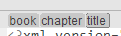
In this sample sample, it is displayed you are in a node family, the parent of this node is the element name, etc...
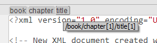
When moving the mouse over a node of the location bar, the XPath location is displayed. When clicking on this node, the text's cursor is moved to the bound location. A menu popup is available for moving, selecting, copying or cutting the selecting node.
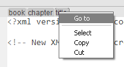
When double-clicking on a node, the whole node is selected.
The File/ZIP/FTP browser is a left tree available with the bound item of the
File menu or the View menu. This tree browses your home directory by
default (or a zip file content). This tree maintains the last selected element (file or
directory) even when closing and reopening EditiX.
For using the browser, you must select a filter with the document you
want to open and click on the "Open" bottom button.
A shortcut key ctrl shift 1 helps you opening or closing the File browser. For changing the default directory, use the bottom icon and select a new one, it will be saved for your next usage.
Note that you can open a ZIP file with a Drag'n Drop on EditiX. For deciding what is a ZIP or not, EditiX uses the zipBrowser/zip extensions preference containing all the ZIP file extensions.
Others panels are available on the left interface part.
It is available from the File menu. It displays the File type, the size, the encoding charset and the File path. You can copy the File path by selecting the text inside. You may also change the current document type, sometimes this is useful when you choose a wrong file type.
It is available from the Search Menu. It displays a panel for searching nodes as elements, attributes, attribute values. This is useful when you ignore XPath expressions. You can search from the start of the document or from the current selected node (in the tree or in the text). Note that this panel can be activated for detecting occurences of the current element by the editor popup or by activating F2. By the editor popup you can also display occurences of an attribute.
This is available from the XML menu. It is used for listing UTF-16 characters and inserting it easily inside the editor. Note that some characters may not be visible due to limitation of your default Font. By doucle-clicking on a character, the character reference will be inserted at your caret location.
This view is available from the XML menu. The goal of this view is to help you to build your own elements library for increasing productivity with usual XML structure. This view is composed of folders and nodes. A node in blue is an element, in green this is an attribute. You may change the element or attribute name using a popup. Drag'n and drop is available for ordering folders or nodes.
An element node can have two states. The first state is the default one, the element added is the same one inside the library (except that if you add an element containing a text, the XML snippets view will store that it musn't close like <MyElement/>). The element snippet is added from the current editor element node (in the tree or in the text). Note that when adding, it will not include the children, this is your job to include after each child. The second state is a repeating state that is set using the tree popup. When an element can be repeated, a dialog box when inserting will ask to the repeating number. This is useful as usage for adding a table with various rows and columns.
For adding a snippet into you XML document you may using drag'n drop from the panel, or double-click or using the first icon of the toolbar's tree. Note that the added structure is not formatted, you may after format your document using the default format action (XML menu or inside the default toolbar). If you select a text before adding, and if your element snippet could contain a text, then the selected text will be surrounded by the added element.
For adding your own snippet, you must open an XML document with the good structure. Then after selecting a folder or an element snippet you must use the second icon in the toolbar of the tree. All the attributes will be added and you may delete or change the name or the value using the popup of the tree. When adding a snippet, if your editor's element has a text content, then a special flag will be stored for avoiding an auto-closing element. Using the popup of the tree, you may add a comment for your new snippet and decide if you wish to repeat it.
All your snippets are stored in your HOME/.editix/snippets.xml.
EditiX supports several ways for editing a file. The drag'n drop is available from the file system to editix (tabbed pane) or to the project panel. Basically the file
system is supported, but it is also possible to load and handle a
document by a remote access like FTP. We describe here the way the user
can manage its files.
For Windows Platform, you may choose EditiX as your default editor for any XML documents, thus editix will be opened each time you will select an XML document :
-
Select an XML document,
- Right click, choose "Open With"
- Browse (go to the last item) for selecting an executable from the bin directory of EditiX Installation like editix-XMLEditor.exe or run.bat.
| Document type | File extension |
|---|---|
Standard XML document or Very Large XML document |
xml |
| Document Type Declaration (DTD) |
dtd |
| Text |
txt |
| XSL Transformations |
xsl or xslt |
| XHTML 1.0 document |
html or htm |
| HTML 4.0 or 5.0 document | html or htm |
| JavaScript | js |
| JavaScript with the DOM API | jsx |
| DocBook |
xml |
| W3C XML Schema |
xsd |
| XM RelaxNG Schema |
rng |
| Mathematical Markup Language
(MathML) 1.0 |
mml |
| Scalable Vector Graphics (SVG)
1.0 |
svg |
| XSL-FO |
fo |
| CSS | css |
| XQuery | xq or xql or xquery |
| ANT |
xml |
| XML Scenario | xfl |
Creating a new project
Here the dialog when creating a new project
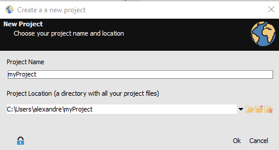
The project name is just the final directory name from your project path. You may also choose a name for matching a current directory.
Editix will create in your project directory a sub-directory .editix. It will contain at least two files :
- config.xml : This file stores your configuration for synchronization by File or FTP.
-
workspace.xml : This is the file storing all your parameters when using a document inside editix like your document type, the XSLT data source for transforming...
Tip : You may copy/paste the .editix sub-directory to retreive your configuration to another directory and transform it easily as a new editix project.
Creating a new project using archive
Using the file menu and the item "New project from an archive", you can select a ZIP file (including any compatible one like the open office documents), editix will create automatically a new project located at your HOME directory and inside the .editix folder. This project will contain all your ZIP content. Thus you can work with your ZIP files easily.
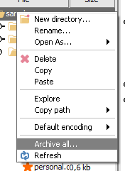
After working with your project you can export a new archive from the popup menu.
Opening a project
When opening a project from a dialog box, the editix's project is displayed by a specific icon. Then select this directory and click on the open button.
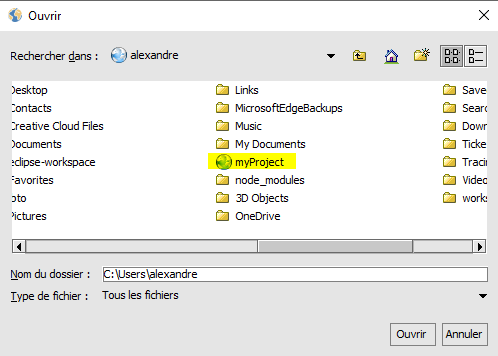
The project panel
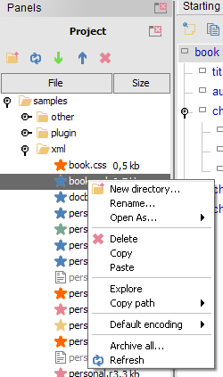
The project panel displays your directory content ordering it by name from directories to files. For opening a document you may double-click on it or use the menu popup and the sub-menu "Open As...". In this last case you are sure to have the right document type. The last document type will be stored for the next opening.
When updating the project content you can refresh the panel using F5 or the popup menu (Refresh item).
Opening a file from the project panel will store any parameters defined inside editix, then for your next usage you will retreive it. For sample if you open an XML document and try to define an XSLT document for transforming, this document will be available for your next usage.
Usual actions like copy/cut/paste/rename are available inside the project for directories or files. Some shortkeys are also available like ctrl/command c, ctrl/command x, ctrl/command v for copy/cut/paste. Note that the cut action is in reality a delete action, it means you can't paste after the delected file or directory.
Among the actions, using the Explore popup action will open your File Explorer at the current file or directory location.
For synchronized your project path to a remote server, use the following actions
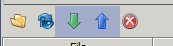
The green one is for downloading and the blue one for uploading to your remote server.
When choosing these operations you will have to choose a remote configuration :
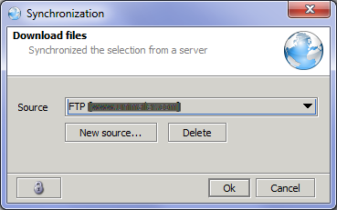
It can be an FTP configuration or a file system configuration. For creating a remote configuration, choose the "New source..." button and select it. Your parameters will be stored inside your project for the next usage.
Then press "Ok" for starting the synchronization, your status bar will display the current operation. You can't start another synchronization operation while it is working. You must wait for the end of the operation.
The tree is another view of the text part. The tree is always
synchronized with the document content and
the current document location. When a tree can't be synchronized to the
text due to a user document error
this icon is located at the root . By
clicking on this icon, the user can visualize the error on the
text part. A tooltip is also available with a message summing up the
problems.
User can select a node by clicking on the tree, thus the corresponding
element is selected inside the text. It is also possible to move or
copy a node by dragging and dropping
the good content(*) (Due to a problem with the JDK implementation on Mac
OS X, this action is
reserved to Unix/Linux and Windows). You can move a node inside the tree or move it inside the text part. By double-click you can select the whole node.
(*) The operation will not work if you copy or move into an auto-close element like <a/> you must have a node with <a></a>.
We list here the available tree actions :
| Action | Role |
|---|---|
| Comment the select node. If a
comment is located inside the node, this action is rejected so in this
case commenting the node will need to remove all inner comments. |
|
| Copy the selected node and its
content. Note that this feature will act on the editing part. |
|
| Cut the selected node and its
content. Note that this feature will act on the editing part. |
|
| Switch to another tree view. We
detail it after. |
| Default filter |
node
value |
| Prefix filter |
ns
node |
| Namespace filter |
http://www.japisoft.com
node |
| Qualified name filter |
ns:node |
The current node is located both with a left bar and by underlining the beginning and the ending part of the node. The "Search" menu includes actions for going to the beginning and the end of the current node. Note that the left bar contains a single action displayed as a square for selecting the current node. This left bar is also colorized in red when an error occur with a tooltip containing the main error.
When using the ctrl key with your mouse, the bound XPath location is shown
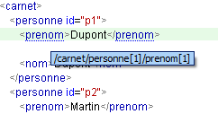
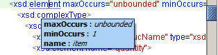
For managing XML, the editor supports various actions :
- Ctrl up or down keys will select the next or the previous node (element or text node )
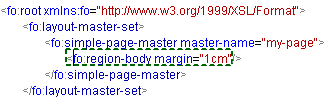
- Ctrl shift up or down keys will select the next or the previous sibling node.
- Ctrl page up or down will select the next ancestor or the first child
- When your document contains errors alt up or down keys will select the next of the previous parsing error
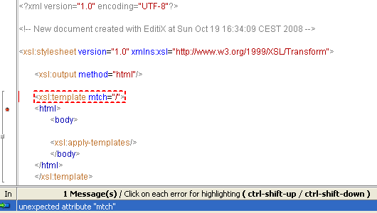
Note : If you double click on the error title bar, the error list view will be doubled.
- Various node selection or operations :
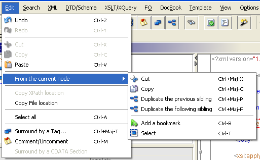
NoteIt is important to understand that all this operations can work only for the current node. EditiX may have a short delay depending your document size before finding the current one, it is notified by underlining the starting and the ending part of the node.
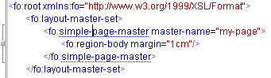
In this sample, the current one is fo:simple-page-master (we will use it for our next examples).
Surrounding a tag (ctrl-shift T) is a way to put a new parent to the current node or the selection (in priority for this last case). You can insert too new attributes. If you have multiple lines, you may choose to split it into several tags. Choosing the bookmarks will use the bookmarks tags for surrouding.
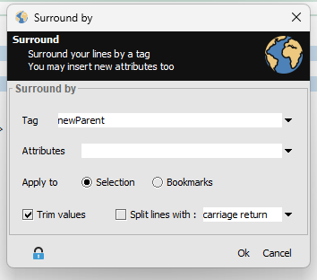
The result is :
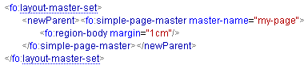
If you click on the left column on the editor, you will add bookmarks.
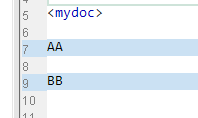
By using the surrounding action and select the bookmarks option you will have :
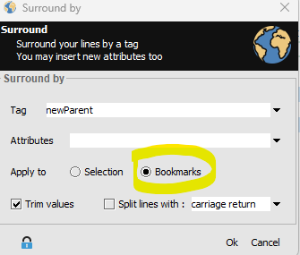
The result is :
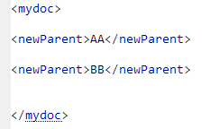
If you don't want this result, just undo twice.
When you want to comment the current node, call the "Comment/Uncomment" (ctrl-m) action from the Edit menu, the result will be :
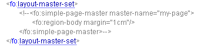
If you want to uncomment, go simply into the comment and use the same command.
A popup (right mouse button) is available using the current node :
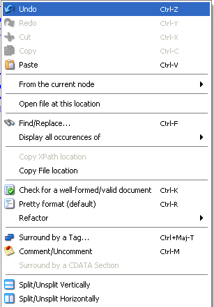
One useful action is the "Display Occurences of", that can display any repetitions of an element name or an attribute. Using also the F2 key, it can display all the occurence of an element node.
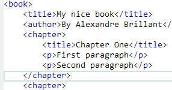
Here a document sample, using the popup action or F2 for the "p" tags, we have to the left part of the editor a new panel with :
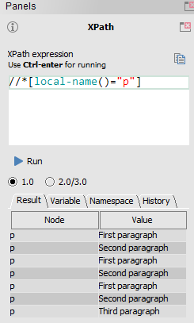
By clicking on each line you can select the right "p" tag and navigate easily inside your document. Note that the new panel is the default XPath panel.
Note : By clicking on the result header ("Node" / "First text") you can sort the result.
The refactor submenu is a way to change all your document, for sample supposing you wish to rename all the occurences of an element. This menu is available from the text popup.
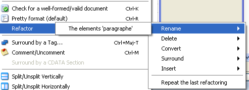
The refactor actions will depend on the current node and the document type. For sample in an XSD document, you may rename an element name, it will change also all the references to this name (by reference, substitution group...).
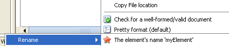
Using the text popup menu or the ctrl key when moving the house, you may find easily node references. A node reference is a node that is bound to another one depending on the document type. For sample for the XSLT document, selecting the match value, you can find which nodes try to select this match part using an apply-select.
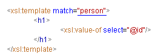
It will work for XSLT, W3C Schema (types and references) and XSL - FO documents (page references).
A content assistant is available inside the editor part. This content assistant will change depending on the document type. There's several content assistants, each one can be accessible with a user characters sequence. In all the cases, when available the content assistant doesn't avoid the user to insert any text but it filters the possibilities depending on the current inserted sequence, the availability of a schema or the document type.
The content assistant works when inserting a characters sequence (like <) or by using the ctrl space key.
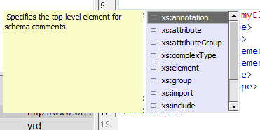
You may remove it using the escape key or avoid it using the following toolbar action :
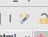
When the content assistant is shown, each time you press a key sequence matching a set of item, editix will filter only the good ones. For sample if I insert "xs:a", the content assitant will only show me the items starting with "xs:a". If I want to see the previous items, I simply press "supp" for showing it.
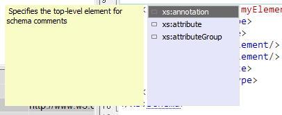
When showing the right item, you simply press "enter" or click on the item.
- Default
This is available when inserting "<!". It offers an XML declaration,
a Comment or a CDATA section. Using ctrl space, EditiX will be able to show you any tags or attributes even if no schema is found.
- DTD
It is available when inserting a "<!" sequence. This is a simple
list of the available DTD parts like ELEMENT, ATTRIBUTE, ENTITY or
NOTATION.
- A document with a schema
This last case is the more complex one and works with the following
schemas :
When adding a namespace definition without a prefix then a default
namespace is added (under the format xmlns="...").
Here a sample with namespaces :
<p1:element1 xmlns:p1="http://www.p1.com"
xmlns:p2="http://www.p2.com">
<p2:element2/>
</p1:element1>
We have two namespace definitions for the URL http://www.p1.com and
http://www.p2.com. The node "element1" is inside a namespace mapped to
the URL http://www.p1.com and the node "element2" is mapped to a
namespace with the URL http://www.p2.com.
When editing an XML document, it is better to format the document for a pretty reading. Formatting is a process that will add empty spaces for aligning children nodes. These spaces will not corrupt your document because they are outside the tag content. Note that there's no Undo available when formatting, however you may save your document before and re-read it for undoing.
Formatting an XML document is available inside the default toolbar with this action . However you may choose more sophisticated scenarios for formatting through the XML / Format Menu :
- Pretty Format : This is the default one
- Explicit Open/Close : It will replace any closing tags like <a/> by <a></a>
- Text Trimming : It will remove any white spaces before and after a tag content. Thus <a> 1 </a> will becore <a>1</a>
- Unformat : This is a way for creating a very short document by removing any unuseful spaces. Only for an application processing.
For separating each element level (parent and children as sample), EditiX uses a set of tabulations. A tabulation is a special character composed with several whitespaces. You may change the number of tabulations and the number of whitespaces in the XML/Format submenu. You may also use the Preferences option (application/file/tab-size and xml/xml-config/format-space).
EditiX manages the xml:space attribute, it may help you for maintaining white spaces somewhere in your document. This attribute can have two values : "preserve" or "default", the first one will keep whitespaces after formatting, the second one will let the application deciding.
<personnel>
<person xml:space="preserve">
<name xml:space="default"> Don't keep spaces here
</name> Keep spaces here </person>
</personnel>
A filter is a way for editing only a subset of your XML Document. This is a very attractive and efficient editing mode. It requires minimal knowledge with XPath Expressions (v1.0).
We suppose for our demo we have the following XML document :
<personnel>
<person id="Big.Boss" > <name><family>Boss</family> <given>Big</given></name> <email>chief@foo.com</email> <link subordinates="one.worker two.worker three.worker four.worker five.worker"/> </person>
...
</personnel>
This is a catalog of persons, this file is only a sample, it could have a totally differente structure.
Open your XML document and switch to the Filter mode using the bottom button :
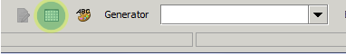
Click on this button for creating a new Query
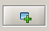
This query will filter a sub set of your XML document, for sample we will focuse only on the persons.
In the XPath Query Field, we will choose a main XPath Query that will get only major elements to edit, in our case we want to edit all the persons, so we write this XPath query : //person (meaning all the person descendant in our XML document).
In the Columns part, we choose the element part of each person we want to edit. For sample we have an id attribute for each person, a family name and a given name. We are going to write another XPath queries relative to each person :
For each person we want to edit :
| Column Name | Column Value |
|---|---|
| id | @id |
| family name | name/family/text() |
| family given | name/given/text() |
The column name is a free text. The Column Value is a relative XPath Expression for helping the editor to know which part of each person you want to edit. In the first line we want the id attribute value, and in the second and third we want a part of the name.
For running your XPath query, you must activate this button :
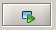
The following grid appears :
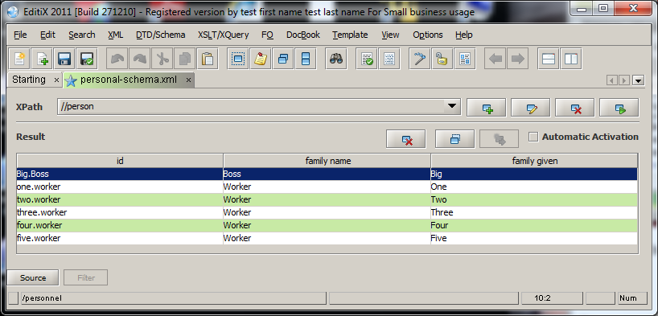
You can edit each column, it will be automatically set on your final XML document. If you activate the "Automatic Activation", it will run the query each time you will invoke the filter mode. Note that your XPath Queries are preserved in your Project if you add your document into it.
You may also edit or remove the current XPath Query. You can add any XPath Queries you wish.
You may also remove or duplicate a data line, it will take into account the current selection.
The visal editor is a way to edit your XML document using a CSS document.
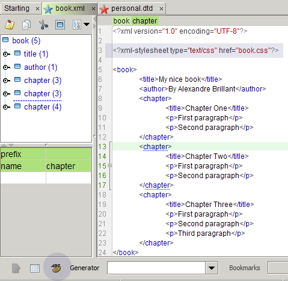
It is available from the bottom icon. Pressing this button it will switch to the visual editor. It takes a delay for your first usage.
When switching to the visual editor, editix will search if you have assigned a CSS document inside your XML document. If it can't find, it will use a default CSS that will display for each tag as a CSS block.
For assigning a CSS document you may use "Assign CSS" from the XSLT menu or put it yourself inside your XML document like
<?xml-stylesheet type="text/css" href="book.css"?>
In this sample, it means you have a book.css CSS document in the same directory of your XML document.
Here a CSS document sample
* {
font-family:Arial, Helvetica, sans-serif;
margin-bottom:4px;
}
author {
}
book title {
font-size:30px;
color:#0044FF;
margin-bottom:20px;
text-decoration:underline;
}
book chapter title {
font-size:20px;
text-decoration:normal;
margin-bottom:8px;
color:#0022FF;
}
p {
font-size:12px;
font-style:italic;
margin-left:20px;
}
Editix doesn't manage all the CSS properties, unknown property will be simply ignored.
List of managed CSS properties :
- background-color - border - border-left - border-right - border-top - border-bottom - color - font-size - font-family - font-style (italic,normal) - font-weight (bold,normal) - margin - margin-left - margin-right - margin-top - margin-bottom - text-decoration (underline,normal)
A color can be defined by hexadecimal values like #ABC or #AABBCC. Percent values are available for margin only, pixel value is also possible. Font-size or border width must be set in pixel.
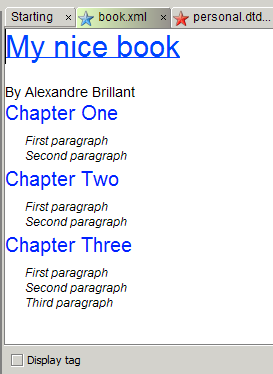
The visual editor will display your tag content, it can't show an XML attribute value as this is not managed by CSS.
You can copy/cut/paste your content or duplicate your current element using the ctrl (command for mac) enter key. You current XML location is always displayed inside the status bar.
However it may be not enough for editing your XML document like adding/inserting/removing nodes, that's why you have "Display tag" check box at the bottom of the editor for helping.
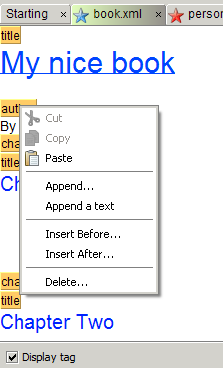
When activating, each tag is displayed by a yellow box with its name. From each box, you can update any tag using a popup menu like appending a new tag, appending a text, delete it...
For displaying your final XML document just save it or click on the source icon here. Editix will then generate your XML document.
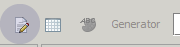
The generator is a powerful field for building XML parts using a simple XPath expression. This field is located at the bottom of the editor. The XML is generated at the cursor location only.
Your XPath expression is a subset of the XPath 1.0 standard. It supports predicates with an occurence, attributes (with or without value), children and the operators or / and.
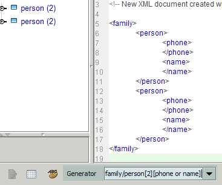
Note : You can't have predicates inside predicates.
Sample of XPath expressions managed by EditiX and the XML result :
Generator person
XML Result <person>
</person>
Generator person[2] XML Result <person>
</person>
<person>
</person>
Generator person/name
XML Result <person>
<name>
</name>
</person>
Generator person/name/firstname XML Result <person>
<name>
<firstname>
</firstname>
</name>
</person>
Generator person/name[2] XML Result <person>
<name>
</name>
<name>
</name>
</person>
Generator person[2]/name[2] XML Result <person>
<name>
</name>
<name>
</name>
</person>
<person>
<name>
</name>
<name>
</name>
</person>
Generator person[2]/name[2]/firstname XML Result <person>
<name>
<firstname>
</firstname>
</name>
<name>
<firstname>
</firstname>
</name>
</person>
<person>
<name>
<firstname>
</firstname>
</name>
<name>
<firstname>
</firstname>
</name>
</person>
Generator person[@name and @firstname] XML Result <person name="" firstname="">
</person>
Generator person[name or firstname or address or @id='test'][2]/family[father and mother] XML Result <person id="test">
<name>
</name>
<firstname>
</firstname>
<address>
</address>
<family>
<father>
</father>
<mother>
</mother>
</family>
</person>
<person id="test">
<name>
</name>
<firstname>
</firstname>
<address>
</address>
<family>
<father>
</father>
<mother>
</mother>
</family>
</person>
<?xml version="1.0" encoding="${default-encoding}"?>
<!-- New document created at ${date} -->
${cursor}
| Element
added |
|
| Element
moved |
|
| Element equal |
|
| At
least, one different descendant |
|
| Element
removed |
| Change | Content | Meaning |
|---|---|---|
| attributed removed |
icon |
The "icon" attribute has been
removed. Click on this line for selecting fastly the good node. |
| attribute added |
doc |
The "doc" attribute has been
added. Click on this line for selecting fastly the good node. |
| Element added |
toolbar |
The "toolbar" tag has been
added. Click on this line for displaying where it is located inside the
tree. |
| attribute changed |
id=fo |
The attribute "id" has a value
"fo" which is not equal to the "id" attribute compared to the right
document. Click on this line for showing the bound node inside the tree |
<!ELEMENT root ( child1, child2 )>It means that the root element must be a child node "child1" followed by a child node "child2". Both children
<!ELEMENT child1 #PCDATA>
<!ELEMENT child2 #PCDATA>
<?xml version="1.0" encoding="UTF-8"?>
<xs:schema xmlns:xs="http://www.w3.org/2001/XMLSchema" elementFormDefault="qualified">
<xs:element name="root">
<xs:complexType>
<xs:sequence>
<xs:element ref="child1" minOccurs="1" maxOccurs="1"/>
<xs:element ref="child2" minOccurs="1" maxOccurs="1"/>
</xs:sequence>
</xs:complexType>
</xs:element>
<xs:element name="child1" type="xs:string"/>
<xs:element name="child2" type="xs:string"/>
</xs:schema>
For building a new W3C XML Schema the user must activate the "New..."
item from the "File" menu and choose the W3C XML Schema
line. An editor for XML document will be opened. The content assistant
will help you to choose your tags or attributes.
For using the visual mode, click on the Visual Editor tab.
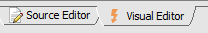
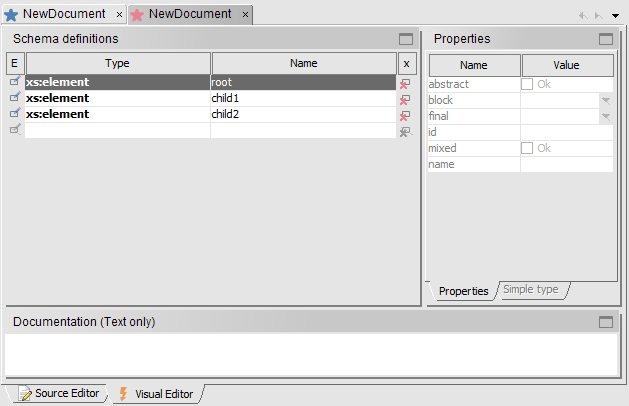
The main table contains all your global definition. You can change an element name by double clicking on the name column. The properties panel lists all your current element properties. A property in a gray color means the property has not been used. You can set a simple type facets, list or union using the "Simple type" tab.
For editing an node content (a complex type) you must select the first column icon () or double click on the Type column cell. It will switch to the visual mode.
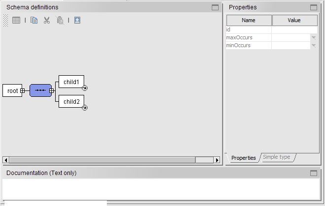
Using the right mouse click on the selected element (in blue) will show a popup for adding/removing/moving/opening....
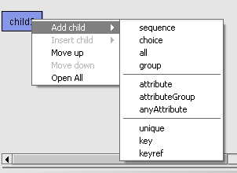
Clicking on the square in front an element will close the element content, clicking again will opening the element content. The visual schema editor will display all your element content including reference elements and extenal types.
Suppose that the child1 node contains now a sequence like
<xs:element name="child1"> <xs:complexType> <xs:sequence> <xs:element name="child1.1"/> <xs:element name="child1.2"/> </xs:sequence> </xs:complexType> </xs:element>
The root node will be now
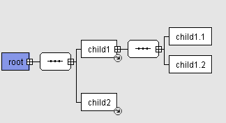
When you use a reference element or an external type an arrow at the bottom right will be displayed. The visual schema editor will display too included or imported schemas, however you can't modify these external schemas.
When switching from the visual editor to the source editor, the last selected element is shown. This is similar from the source editor to the visual editor, the cursor location is used for opening the current node.
The user can generate an HTML document for this schema using the DTD/Schema menu (Generate a documentation from this schema...). Here a sample of schema document.
Rather than building yourself a W3C XML Schema it is also possible to
let editiX generating a new one from an XML document instance.
For using this feature you must open an XML document and use the
"Generate a W3C XML schema from this document" item of the
"DTD/Schema" menu.
After building a schema, you must assign it to your XML document. For
acting, you have the "Assign W3C XML Schema to document..." item
from the "DTD/Schema" menu.
Here a sample for the result choosing an external test.xsd schema :
<application xmlns:xsi="http://www.w3.org/2001/XMLSchema-instance" xsi:noNamespaceSchemaLocation="file:///home/japisoft/test.xsd">Meaning 'check if the document starting by the application element validates the schema located in the test.xsd file'.
</application>
<application att1="value1" att2="value2" xmlns:xsi="http://www.w3.org/2001/XMLSchema-instance" xsi:noNamespaceSchemaLocation="test.xsd">Meaning 'check if the document starting by the application element validates the schema located in the test.xsd file in the same path of the document'.
</application>
<application xmlns:xsi="http://www.w3.org/2001/XMLSchema-instance" xsi:schemaLocation="http://www.mysite.com/test.xsd">Meaning 'check if the document starting by the application element validates the schema located in the www.mysite.com web site inside the test.xsd file'.
</application>
?xml version="1.0"?>
<grammar xmlns="http://relaxng.org/ns/structure/1.0">
<start>
<ref name="root"/>
</start>
<define name="root">
<element>
<name ns="">root</name>
<group>
<ref name="child1"/>
<ref name="child2"/>
</group>
</element>
</define>
<define name="child1">
<element>
<name ns="">child1</name>
<empty/>
</element>
</define>
<define name="child2">
<element>
<name ns="">child2</name>
<empty/>
</element>
</define>
</grammar>
The XSLT Editor displayes all the included documents and a template Manager. The template manager displayes all your template instructions, you may rename it
or move it by drag'n drop in the same or to another included document. When clicking at the beginning of a line in the template manager, the editor switches to the bound
editor and template instruction. A popup is available on each template line for inserting a new template instruction before or after this one.
The XSLT Debugger has five main parts :
User can drag'n drop a node from the Data source to the XSLT editor for building template, for-each or value-of instructions.
Warning : A message can appear when setting a file path "Please don't use path with whitespaces inside". You can disable it from the options menu, using the preferences dialog. Select xml / xslt and "check whitespaces in path", choose false and restart editix.
For using XSLT parameters, the user must declare the needed parameters inside the XSLT document under the root node : As sample :
<xsl:param name="test1"></xsl:param>
...
<xsl:value-of select="$test1"/>Once the XSLT properties fixed, the XSLT transformation can operate in background. "In background" means that the user can continue
The result document can be any text documents like xml/html/csv... EditiX is able to generate complex outputs like word (docx), excel (xlsx). For all this "zipped" outputs, editix uses a configuration file for choosing the default output model and the part of the model to modify. You can update this configuration file using the menu item Options/Edit XSLT outputs. This file contains a set of document type. The type is the file extension, the source is the location of the default document and the target is the part of the default document to modify. This document is located inside your Home/.editix/xsltmodels.xml file. If you update it, you must reload it in memory using the item Options/Reload XSLT document outputs. If you delete this file, the default configuration will be used.
<?xml-stylesheet type="text/xsl" href="file:///home/test/test.xsl"?>As this is an absolute path, it may be better to replace it by an http access or a relative path.
| Start the XSLT Debugging. It
will run until the first breakpoint |
|
| Run until the next breakpoint |
|
| Run step by step |
|
| Conclude the XSLT Debugging |
<?xml version="1.0" encoding="UTF-8"?>Note that when loading a docbook document the user must specify a docbook filter otherwise editix will believe this is a standard XML document
<!DOCTYPE book PUBLIC "-//OASIS//DTD DocBook XML V4.0//EN" "http://www.oasis-open.org/docbook/xml/4.0/docbookx.dtd">
<book>
<bookinfo>
<title>Your title</title>
<author>
<firstname>Your first name</firstname>
<surname>Your surname</surname>
<affiliation>
<address>
<email>Your e-mail address</email>
</address>
</affiliation>
</author>
<copyright>
<year>2004</year>
<holder role="mailto:your e-mail address">Your name</holder>
</copyright>
<abstract>
<para>Include an abstract of the book's contents</para>
</abstract>
</bookinfo>
<part>
<title>Part1</title>
<chapter>
<title>Part 1, Chapter 1</title>
<sect1>
<title>Part1, Chapter 1, Section1</title>
<para> Your Text </para>
</sect1>
</chapter>
</part>
</book>
<?xml version="1.0"?>For building a new FO document, the user must activate the "New..." item from the "File" menu and select the XSL-FO item. The "FO" menu
<fo:root xmlns:fo="http://www.w3.org/1999/XSL/Format">
<fo:layout-master-set>
<fo:simple-page-master master-name="my-page">
<fo:region-body margin="1in"/>
</fo:simple-page-master>
</fo:layout-master-set>
<fo:page-sequence master-reference="my-page">
<fo:flow flow-name="xsl-region-body">
<fo:block>My text</fo:block>
</fo:flow>
</fo:page-sequence>
</fo:root>
For repeating the last transformation the user must activate the
"Repeat last transformation" from the "FO" menu. For saving the
parameters
it is required to save the document inside a project from the "File"
menu.
The XML Form is a way for editing an XML document using a standard form, it helps users creating or changing an XML document with a minimal knowledge. The form is built using the XML Form Designer inside EditiX. This designer works using a W3C Schema with a mapping system between some schema elements and some form fields.
Before using the XML Form Designer you need a W3C Schema. We propose this W3C Schema as a sample : purchaseOrder.xsd [HTML documentation]. We are building an XML Form document (*.exf) with our schema.
Step 1 [Preview] : Create a new document (Menu File, New...) and choose "EditiX XML Form Designer".
Step 2 [Preview] : In the left part (Data tab) select your schema inside the "Schema Location" field. You may have to choose a root element because a W3C schema doesn't contain information about the main container element. The document structure contains a tree with your W3C schema content starting from your element root.
Step 3 [Preview] : Drag 'n drop your fields in the main designer part. Your form fields must be bound to the W3C schema structure, it means if you have an element that is a container of other elements, then it must appear in the main designer part as a container field. Each field contains a relative XPath location showing your field location in the final document structure, this is used by EditiX to compute the XML document result.
For customizing your form, you can add labels, separators... using the components tab with a drag'n drop in the main designer. You may also change some components properties using the properties tab like the background or the foreground color... The title properties is only for the container field. You may also edit the XML Form fields switching the source editor, this is useful for some processings like a search/replace.
You may download the final form sample here.
For using the XML Form editor, it requires an XML Form document (*.exf), look at the previous paragraph for building it.
Step 1 [Preview] : Create a new document (Menu File, New...) and choose "EditiX XML Form Editor ".
The empty document contains a processing instruction "<?xmlform 'YOUR_FORM_PATH'?>". This processing instruction must be set with a path to your XML Form (*.exf). This path can be absolute or relative to your document location (save it firstly for this last case).
As a sample we can save our document in the same directory of our xml form (*.exf) and set the processing instruction with this value :
<?xmlform 'purchaseOrder.exf'?>
Step 2 [Preview] : Switch to the Visual Editor, it will display an XML Form for editing your XML document. You can switch to the source editor for changing the final document, the XML Form will keep any XML added parts (even if there're no fields managing it).
The result documents can be downloaded here.
For loading your XML document and edit it with a form, you must always select the File Filter "EditiX Form Editor" before choosing your XML Document inside the file chooser dialog.
Create a new document and choose the XML Scenario template from the Tools category.
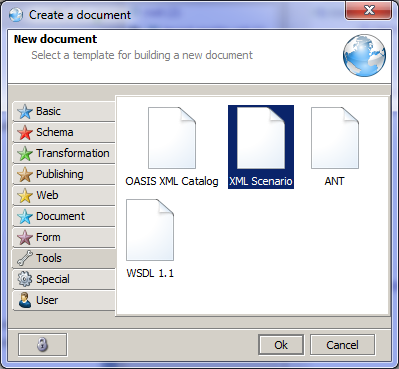
A new scenario document is created with
<?xml version="1.0" encoding="UTF-8"?> <scenario></scenario>
"scenario" is a root tag containg your XML tasks. For building your scenario, you must click on the "Visual Editor" tab.
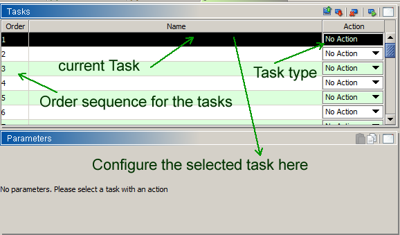
This is a sequence of XML tasks. Select a task, Click on the "No Action" popup and choose your task type, then define a task name by clicking on the name column. Depending on your Task type, the parameters panel will be updated, thus, you will be able to configure your task.
Here a list of task type
| Task type | Role |
| CONCAT | Concat a set of XML documents to unique one. You can choose the final root tag. |
| COPY | Copy a set of documents from File system or FTP to File system or FTP. |
| CSV | Convert a set of CSV documents (for sample, result from excel export) to XML. |
| DELETE | Delete a set of documents from File system or FTP. |
| DOCBOOK | Transform a set of Docbook documents to PDF... |
| FOP | Transform a set of XSL-FO documents to PDF,RTF... |
| FORMAT | Pretty Format for a set of XML documents |
| JSX | Update a set of XML document with the JavaScript DOM API |
| PARSING | Parse/Validate a set of XML documents |
| XQUERY | Transform a set of XML documents using XQuery |
| XSLT | Transform a set of XML documents using XSLT |
When a task processes a set of documents, a Source filter is used with the following format : "(.*).XXX". This is a regular expression matching any file having a XXX extension. The parenthesis are here for the prefix part of the file name. For sample : (.*).xml will match any .xml documents. The postfix part of the file name is inside the parenthesis. This postfix can be reused for choosing the file target name using $1.
Sample about filter with an XSLT task
| Source File | Filter | Target | Result file |
| personal.xml | (.*).xml | $1.html | personal.html |
| boss.xml | (.*).xml | $1.html | boss.html |
| employee.xml | (.*).xml | $1.html | employee.html |
In this sample, we try to transform a set of XML documents to HTML using the same stylesheet, using the right filter and target we can have the same postfix inside the result file.
You may run task by task () or the whole scenario () inside EditiX. When an error is found the scenario is interrupted.
It is also possible to run it outside editix using the scenario.bat (for Windows) or the scenario.sh (for Unix/Linux/Mac OS X) script from the bin directory. For Mac OS X you must download the unix/linux or raw version. In all case, you must open a terminal and pass to the script the scenario file path. You must be sure on unix/linux/Mac OS X platform to have right to run the scenario.sh script using the command line "chmod u+x scenario.sh". Both needs a valid "java" (>1.7) command available from the console
| <a> |
| <altGlyph> |
| <altGlyphDef> |
| <altGlyphItem> |
| <circle> |
| <clipPath> |
| <color-profile> |
| <cursor> |
| <defs> |
| <desc> |
| <ellipse> |
| <feBlend> |
| <feColorMatrix> |
| <feComponentTransfer> |
| <feComposite> |
| <feConvolveMatrix> |
| <feDiffuseLighting> |
| <feDisplacementMap> |
| <feDistantLight> |
| <feFlood> |
| <feFuncA> |
| <feFuncB> |
| <feFuncG> |
| <feFuncR> |
| <feGaussianBlur> |
| <feImage> |
| <feMerge> |
| <feMergeNode> |
| <feMorphology> |
| <feOffset> |
| <fePointLight> |
| <feSpecularLighting> |
| <feSpotLight> |
| <feTile> |
| <feTurbulence> |
| <filter> |
| <font> |
| <font-face> |
| <font-face-src> |
| <font-face-uri> |
| <foreignObject> |
| <g> |
| <glyph> |
| <glyphRef> |
| <hkern> |
| <image> |
| <line> |
| <linearGradient> |
| <marker> |
| <mask> |
| <metadata> |
| <missing-glyph> |
| <path> |
| <pattern> |
| <polygon> |
| <polyline> |
| <radialGradient> |
| <rect> |
| <stop> |
| <style> |
| <svg> |
| <switch> |
| <symbol> |
| <text> |
| <textPath> |
| <title> |
| <tref> |
| <tspan> |
| <use> |
| <view> |
| <vkern> |
| Name | Usage |
|---|---|
| tagDelimiter |
This is the color of the <
and > characters |
| selection |
This is the background color for
the text selection |
| dividerLocation |
This is the space in % the tree
used. 20 means the tree takes 20% of the global editing space |
| comment |
This is the color of the XML
comment. |
| dtdentity |
This is the color of the
<!ENTITY dtd declaration |
| dtdattribute |
This is the color of the
<!ATTLIST dtd declaration |
| declaration |
This is the color for
<?...?> XML declaration |
| litteral |
This is the color of the "text"
inside XML documents |
| tag |
This is the color of the tag
inside XML documents |
| attribute |
This is the color of the
attribute name |
| docType |
This is the color of the
<!DOCTYPE declaration |
| font |
This is the editor's font |
| line |
This is the left column color |
| lineWrapped |
This is a mode for displaying
your document with wrapped line. Note that this preference will remove
the tag background color. |
| fullTextView |
This is a mode for displaying
your document with all the XML parts, it will remove the tag background
color. |
| xsltbackgrond |
Background color for each XSLT
tag. |
| namespace |
This is the color of the tag
prefix <prefix:tag> |
| text |
This is the color of the text
outside a tag |
| background |
This is the editor's background |
| dtdnotation |
This is the color of the
<!NOTATION dtd declaration |
| dtdelement |
This is the color of the
<!ELEMENT dtd declaration |
| Name | Usage |
|---|---|
| rw-encoding |
This is the file encoding format
for
reading or writting in a file. This is required for the usage of a non
local document charset. The user can also modify it from the "File"
menu and
the "encoding" sub-menu. |
| defaultXSLTResultPath |
This is the default path for the
resulting document. |
| tab-size |
This is the size in characters
of the tab key. |
| defaultPath |
This is the default path when
opening a document by the "Open..." menu item. |
| defaultXSLTPath |
This is the default path when
assigning an XSLT document to an XML document. |
| Name | Usage |
|---|---|
| tipOfTheDay |
This is for showing a
tip-of-the-day dialog when starting editiX |
| lookAndFeel |
This is the general interface
look-and-feel. |
| beepForActionEnd |
By default activated, it will
alert the user with a "beep" for the end of a background task. |
| initialDocument |
The user can have an initial
empty document when starting editiX. |
| Name | Usage |
|---|---|
| host |
This is the IP address for the
proxy. Such proxy will be used for remote accesses by HTTP or FTP.
Insert
nothing for ignoring the proxy. |
| port |
This is the TCP port for the
proxy. Such proxy will be used for remote accesses by HTTP or
FTP.
Insert 0 for ignoring the proxy. |
| Name | Usage |
|---|---|
| lastTransform |
For repeating the XSL
Transformation |
| selectTag |
Select inside the editor the
current tag |
| selectAll |
Select the whole document |
| find |
Search a text inside the editor |
| format |
Pretty format the XML document |
| save |
Save the current document |
| new |
Create a new document |
| commentTag |
Comment the current tag |
| open |
Open a document from the file
system |
| nextTag |
Move to the next tag from the
current location |
| surroundTag |
Surround the current selection
by a tag |
| paste |
Paste the last copy inside the
editor |
| cut |
Cut the selection inside the
editor |
| previousTag |
Move to the previous tag from
the current location |
| xpath |
Build an XPath expression |
| print |
Print the current document |
| surroundComment |
Surround the selection by a
comment in the editor |
| redo |
Redo the previous operation |
| parse |
Check or validate the current
XML document |
| copy |
Copy the current selection in
the editor |
| undo |
Cancel the last operation |
| Name | Usage |
|---|---|
| phone |
This is used when creating a new
document from a template |
| firstname |
This is used when creating a new document from a template |
| company |
This is used when creating a new document from a template |
| email |
This is used when creating a new document from a template |
| lastname |
This is used when creating a new document from a template |
| default-encoding |
This is used when creating a new document from a template |
| website |
This is used when creating a new document from a template |
| address |
This is used when creating a new document from a template |
| Name | Usage |
|---|---|
| font |
This is the font for the tree
text |
| selection |
This is the color of the tree
selection |
| text |
This is the color of the tree
text |
| background |
This is the color of the tree
background |
| Name | Usage |
|---|---|
| xinclude |
Add xinclude support when
parsing a document. By default activated. |
| parser |
This is the default JAXP parser.
The default value is XERCES, else it must be a valid class name. |
| namespaceAware |
By default activated, it will
check for namespace validity when parsing. |
| format-space |
This is the number of tabulation
used when formatting a document. By default 1. |
| format-replaceAmp |
If true, an entity & is
generated for each & character in text or attribute value |
| format-replaceGt |
if true, an entity > is
generated for each < character in text or attribute value |
| format-replaceLt |
if true, an entity < is generated for each > character in text or attribute value |
| format-replaceApos |
if true, an entity ' is generated for each ' character in text or attribute value |
| format-replaceQuote |
if true, an entity " is generated for each " character in text or attribute value |
| transformer |
This is the default JAXP
transformer for XSLT. The default value is XALAN else it must be a
valid class name. |
| default-encoding |
This is the encoding inside the
<?xml version="1.0" encoding="..."?> XML declaration. This is
useful when creating a new XML document. |
| W3C XML Schema prefix |
This is the default prefix when
generating a new W3C XML Schema from the current document. |
| Name | Usage |
|---|---|
| maxVariables |
This is the maximum number of
XPath variables the user can manage inside its expression. |
| maxNamespaces |
This is the maximum number of XPath namespaces the user can manage inside its expression. |
| Name | Usage |
|---|---|
| parameter |
This is the maximum number of
XSLT parameters |
| Name | Usage |
|---|---|
| htmlstylesheet |
Path for the XSL documents for
the HTML output |
| pdfstylesheet |
Path for the XSL documents for
the PDF output |
EditiX is built around a main XML descriptor. This descriptor is located by default in the res subdirectory of your installation directory.
You may update this descriptor for changing Menus, Toolbars and Adding new Features to EditiX using the Options / EditiX Descriptor menu item.
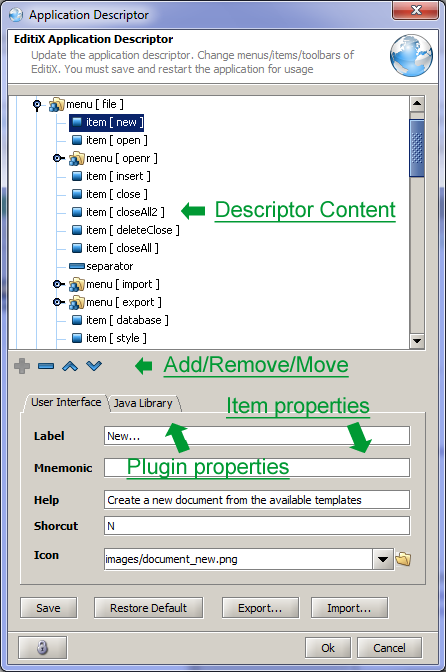
The tree part of the descriptor editor displays menus, toolbars, popups.
For each item selected from the tree, a set of UI properties are available inside the "User Interface" tab. Similalry, The "Java Library" displays the java code bound to the item.
When ending your descriptor change, you must activate the "Save" button for definitive usage. For testing, you must restart the application, if an error is found the default descriptor will be used.
A plugin is a a Java swing Action class or a JavaScript code. An action is a bound to a menu, toolbar or popup item. For adding a plugin, you must add a new item inside the tree, with the "Library" tab, you will have to specify your java libraries (*.jar) and your action class, or specify your JavaScript code at the libraries place.
EditiX contains a plugin API for controlling the editor (located in the editix.jar from your installation directory bin). All is available from EditiXManager class, the editor model is a collection of opened documents, each document is bound to a text or DOM source you may update. This plugin API works both in Java and JavaScript. In JavaScript a predefined object EditiXManager is available (which is in fact an instance of the EditiXManager class).
Here a set of Java samples (available from the samples directory of the installation directory).
Basic : It displays a simple dialog box when activating
import java.awt.event.ActionEvent;
import javax.swing.AbstractAction;
import javax.swing.JOptionPane;
/**
* Here a very simple basic case that can be included inside EditiX using the
* Options/Editix Descriptor menu item.
* @author Alexandre Brillant ( http://www.editix.com ) */
public class Basic extends AbstractAction {
public void actionPerformed(ActionEvent e) {
JOptionPane.showMessageDialog( null, "Hello World" );
}
}
Note : It creates a new XML document with a note root.
import java.awt.event.ActionEvent;
import javax.swing.AbstractAction;
import com.japisoft.editix.plugin.EditiXManager;
import com.japisoft.editix.plugin.EditixDocument;
/**
* Very simple plugin adding a new XML document with a note root
* @author Alexandre Brillant (http://www.abrillant.com)
*/
public class Note extends AbstractAction {
public void actionPerformed(ActionEvent e) {
// Add a new document
EditixDocument ed = EditiXManager.getInstance().getDocumentModel().newDocument( "XML" );
// Fill it
ed.setTextContent( "\n " );
}
}
Update Content : This action will add a new item node to the current XML document root.
import java.awt.event.ActionEvent;
import java.text.SimpleDateFormat;
import java.util.Date;
import javax.swing.AbstractAction;
import org.w3c.dom.Document;
import org.w3c.dom.Element;
import com.japisoft.editix.plugin.EditiXManager;
import com.japisoft.editix.plugin.EditixDocument;
/**
* Very simple plugin updating the current DOM
* @author Alexandre Brillant (http://www.editix.com)
*/
public class UpdateContent extends AbstractAction {
public void actionPerformed(ActionEvent e) {
EditixDocument doc = EditiXManager.getInstance().getDocumentModel().getCurrentDocument();
if ( doc == null ) {
System.out.println( "Ignoring this action" );
} else {
try {
// Get the current DOM document
Document dom = doc.getDOMContent();
if ( dom == null ) {
EditiXManager.getInstance().info( "No current XML document" );
return;
}
Element root = dom.getDocumentElement();
// Create an item element with a date attribute and a content sample
// Add it to the document root
Element newItem = dom.createElement( "item" );
newItem.setAttribute( "date", new SimpleDateFormat( "dd/MM/yy" ).format( new Date() ) );
newItem.appendChild( dom.createTextNode( "My item" ) );
root.appendChild( newItem );
// Updating the current content with this new content
doc.setDomContent( dom );
EditiXManager.getInstance().activeAction( "format" );
} catch( Exception exc ) {
EditiXManager.getInstance().info( "Invalid document " + exc.getMessage() );
}
}
}
}
A Script is a JavaScript code. A Script can be installed from the Application Descriptor or by the Options Menu :
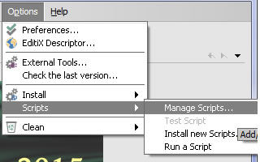
By Selecting "Manage Scripts" you can add a script and bound it to a name or a shortkey.
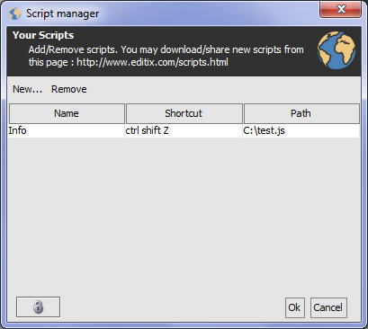
In this sample, we add a script "Info" located in the path "c:\test.js" and activable by this combination of ctrl shift z.
For running your script, you must reload editix and use the shortkey or you can choose the Run a Script sub menu.
a script is a JavaScript file. This is standard JavaScript except you didn't interact with an HTML document (with the predefined document object) but with EditiX through the EditiXManager object. This object is an instance of a Java class ( EditiXManager class).
Here a sample for putting a message inside editix
EditiXManager.info( "Hello World" );
Another one for inserting a new tag at the caret location
// Ask for a node name var nodeName = EditiXManager.prompt( "Test", "YourNodeName" ); // If a response is available
if ( nodeName ) {
// Return the current document var document = EditiXManager.getDocumentModel().getCurrentDocument();
// Put the new node at the caret location document.insertTextAt( document.getCaretLocation(), "<" + nodeName + "></" + nodeName + ">" ); }
For starting a new script, various sample are available by default inside the new document dialog.
You can also download these scripts and new ones at this page :
http://www.editix.com/scripts.html
You can also share your scripts to the users community by sending us.
For building a JSX document you must using the "Transformation" tab.
When opening a JSX document you have two parts. The top part if the JavaScript document with the DOM API. The bottom part is the XML document you want to update.
For running your JavaScript document, you must use the following action from the main toolbar
Each time you run the script, EditiX will update your XML document with the result of the DOM API.
The DOM API contains a set of classes available here. For sample the "document" object contains all your XML document. When writting "document.documentElement", it means get the root element of my XML document.
var root = document.documentElement;
function walk( indent, node ) {
var tmp = "";
for ( var i = 0; i < indent; i++ )
tmp += " ";
// Display the tag name of the node
console.log( tmp + node.nodeName );
// Display the text inside the node
if ( node.childElementCount == 0 && node.textContent != null ) {
console.log( tmp + " #TEXT=" + node.textContent );
}
// Display all the attributes
if ( node.hasAttributes() ) {
for ( var n = 0; n < node.attributes.length; n++ ) {
var att = node.attributes.item( n );
console.log( tmp + " #ATTRIBUTE " + att.nodeName + "=" + att.nodeValue );
}
}
// Repeat it with all the children, we limit it to a depth of 4.
if ( indent < 4 )
for ( var j = 0; j < node.childElementCount; j++ ) {
walk( indent + 1, node.children[ j ] );
}
}
walk( 0, root );
var root = document.documentElement;
// Remove all the TEST tags
var res = root.getElementsByTagName( "TEST" );
for ( var i = 0; i < res.length; i++ ) {
root.removeChild( res[ i ] );
}
// Remove all the BeforeMyTag tags
var res = root.getElementsByTagName( "BeforeMyTag" );
for ( var i = 0; i < res.length; i++ ) {
root.removeChild( res[ i ] );
}
// Add a new attribute at the root
root.setAttribute( "ID", document.documentURI );
// Remove all the previous "MyTag"
var myTags = root.evaluate( "//MyTag" );
for ( i = 0; i < myTags.length; i++ )
myTags[i].parentNode.removeChild( myTags[ i ] );
// Add a new child "MyTag" inside the root
var newElement = document.createElement( "MyTag" );
newElement.setAttribute( "id", "ABC" );
newElement.setAttribute( "No", "123" );
// Add a text node inside
var withText = document.createTextNode( "My text inside" );
newElement.append( withText );
root.append( newElement );
// Add a BeforeMyTag tag before the previous one
var newElement2 = document.createElement( "BeforeMyTag" );
root.insertBefore( newElement2, newElement );
var root = document.documentElement;
// Number result for 1+1
console.log( document.evaluate( 1+1, document, null, 1, null ) );
// String result for "abcdef"
console.log( document.evaluate( "concat('abc','def')", document, null, 2, null ) );
// Boolean result for true
console.log( document.evaluate( "true()=true()", document, null, 3, null ) );
// Nodes
// Get all the "MyTag" tag inside the whole document
var all = document.evaluate( "//MyTag", document, null, 4, null );
for ( i = 0; i < all.length; i++ ) {
var e = all[ i ];
console.log( e.nodeName );
}
// Get only the children of the root
rootChild = root.evaluate( "*", 4 );
for ( var c in rootChild ) {
console.log( "Child " + rootChild[ c ].nodeName );
}
Each time you use another document you must have another document variable for storing it.
Each node of a document has its "owner" and unique property, so by default you can't put a node from a document and put it inside another document because you have another owner value. For doing it, you must use the "importNode" function to update the owner document for the chosen nodes.
Note that the Document class has also a save method for storing your document anywhere.
var root = document.documentElement;
// Read another document and store it inside document2
var document2 = document.read( "D:/test1.xml" );
var root2 = document2.documentElement;
// Get all the "item" nodes from the outside document
var items = root2.getElementsByTagName( "item" );
// Import it before adding it inside the current XML document
for ( var i = 0;i < items.length; i++ ) {
root.append( document.importNode( items[ i ], true ) );
}
You may update a set of XML document using the JSX format
Just choose your path containing all your XML documents and a filter (like (.*).xml for all) and the JavaScript DOM API file for updating each file.
When running the JSX file will be applied for each XML document found.
The following procedure will remove EditiX XML Editor from your system. Be sure that all valuable data stored in the install folder is saved to another location.
For removing all the editix's preferences, please delete the directory YOUR_HOME_DIRECTORY/.editix
EditiX is a cross-platform and
multi-purposes XML Editor, Visual Schema Editor and XSLT Debugger.
An EditiX Version Number is built with :
- A Year (like 2019) bound to major features
- A Service Pack adding minor features and bugs fixing (like SP1)
- A Build number (like 020119) including bugs fixing.
{kind=link}
{kind=link}
{kind=link}
{kind=link}
{kind=link}
{kind=link}
{kind=link}
{kind=link}